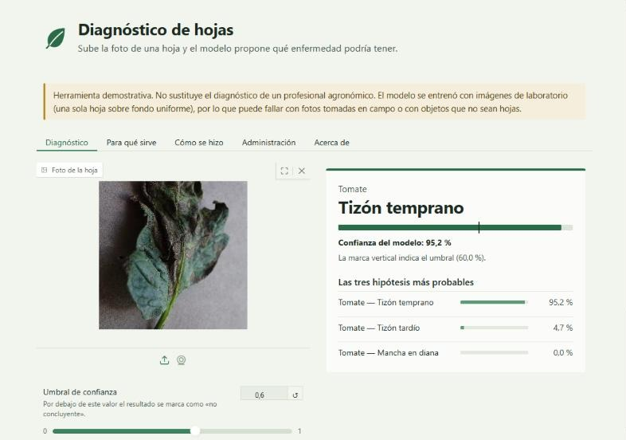

Manzana
Sarna del manzano
Confianza del modelo: 100,0 %La marca vertical indica el umbral (60,0 %).
Las tres hipótesis más probables
- Manzana — Sarna del manzano100,0 %
- Manzana — Sana0,0 %
- Manzana — Roya del cedro y el manzano0,0 %
Sube la foto de una hoja y la aplicación propone qué enfermedad podría tener. Reconoce 38 clases de 14 cultivos y acierta el 97,40 % de las hojas de prueba.
Ver el código en GitHub Cómo se hizo, paso a paso
Herramienta demostrativa: no sustituye el diagnóstico de un profesional agronómico.

Estos son los resultados reales del modelo para las ocho fotos de ejemplo. No es una demostración en vivo: la aplicación calcula cada resultado en el momento. Cambia el umbral para ver cómo un resultado seguro deja de serlo cuando se exige más confianza.
Manzana
Confianza del modelo: 100,0 %La marca vertical indica el umbral (60,0 %).
Manzana
Confianza del modelo: 100,0 %La marca vertical indica el umbral (95,0 %).
Maíz
Confianza del modelo: 100,0 %La marca vertical indica el umbral (60,0 %).
Maíz
Confianza del modelo: 100,0 %La marca vertical indica el umbral (95,0 %).
Uva
Confianza del modelo: 91,1 %La marca vertical indica el umbral (60,0 %).
Sin diagnóstico firme
La confianza del modelo en la hipótesis principal (91,1 %) queda por debajo del umbral (95,0 %). No tomes esta salida como un diagnóstico firme: prueba con otra foto de una sola hoja, con buena luz y fondo liso.
Confianza del modelo: 91,1 %La marca vertical indica el umbral (95,0 %).
Papa
Confianza del modelo: 100,0 %La marca vertical indica el umbral (60,0 %).
Papa
Confianza del modelo: 100,0 %La marca vertical indica el umbral (95,0 %).
Fresa
Confianza del modelo: 100,0 %La marca vertical indica el umbral (60,0 %).
Fresa
Confianza del modelo: 100,0 %La marca vertical indica el umbral (95,0 %).
Tomate
Confianza del modelo: 95,2 %La marca vertical indica el umbral (60,0 %).
Tomate
Confianza del modelo: 95,2 %La marca vertical indica el umbral (95,0 %).
Tomate
Confianza del modelo: 100,0 %La marca vertical indica el umbral (60,0 %).
Tomate
Confianza del modelo: 100,0 %La marca vertical indica el umbral (95,0 %).
Tomate
Confianza del modelo: 99,0 %La marca vertical indica el umbral (60,0 %).
Tomate
Confianza del modelo: 99,0 %La marca vertical indica el umbral (95,0 %).
Las enfermedades de las plantas se notan primero en las hojas: manchas, cambios de color, bordes secos o un aspecto arrugado. Reconocerlas a tiempo ayuda a actuar antes de que se extiendan, pero no siempre hay un especialista a mano, y muchas enfermedades se parecen entre sí.
Recibe la foto de una hoja y propone las tres enfermedades más parecidas entre las 38 que conoce (o indica que la hoja parece sana). Junto a cada propuesta muestra la confianza del modelo: un porcentaje que dice cuán segura está la red neuronal de esa respuesta.
Cubre 14 cultivos, entre ellos tomate, papa, maíz, uva, manzana y fresa.
Este proyecto es un ejercicio de aprendizaje de punta a punta: se entrenó una red neuronal en Google Colab para reconocer enfermedades en hojas y después se empaquetó en esta aplicación para poder usarla con una foto. Cada paso tiene dos partes: qué se hizo y por qué.
Las cifras de rendimiento de esta página se leen de los archivos de evaluación del modelo, no se escribieron a mano.
Qué se hizo. Se usó PlantVillage, un conjunto público de fotos de hojas, en la versión publicada en Kaggle. Tiene 54.305 imágenes de 14 cultivos, repartidas en 38 clases (un cultivo más un estado: sana o con una enfermedad concreta). La descarga venía ya dividida en una parte de entrenamiento (43.444 imágenes) y otra de validación (10.861).
Por qué. Una red neuronal aprende de ejemplos. Para aprender a distinguir 38 clases necesita miles de fotos ya etiquetadas por especialistas, y armar ese conjunto desde cero sería inviable en un proyecto de estudio.
Qué se hizo. Se contó cuántas imágenes hay por clase y se miraron fotos al azar. El reparto es muy desigual: la clase más pequeña (papa sana) tiene 121 imágenes de entrenamiento y la mayor (naranja con enverdecimiento de los cítricos), 4.405. Además, casi todas las fotos son de una sola hoja sobre un fondo liso.
Por qué. Los datos condicionan lo que el modelo aprende. Un reparto desigual hace que las clases con pocas fotos se aprendan peor, y las fotos «de estudio» anticipan que el modelo rendirá peor con fotos tomadas en el campo. Esa es la razón de las advertencias de la herramienta.
Qué se hizo. La parte de validación original se dividió por la mitad, respetando la proporción de cada clase: una mitad para validación (5.430 imágenes) y otra para prueba (5.431 imágenes). Se fijó una semilla para poder repetir la división y se comprobó que ninguna imagen estuviera en dos partes a la vez. La parte de prueba se usó una sola vez, al final.
Por qué. Es como un examen: se estudia con unos ejercicios (entrenamiento), se hace una práctica para ajustar el método (validación) y se rinde el examen final con preguntas que nunca se vieron (prueba). Si el modelo viera las preguntas del examen mientras estudia, la nota no significaría nada.
Qué se hizo. Se añadió una capa de «aumento de datos» que, solo mientras se entrena, voltea la imagen, la rota un poco, le hace zoom y cambia el contraste de forma aleatoria. También se calcularon pesos para compensar las clases pequeñas, pero en esta versión no se aplicaron en el entrenamiento.
Por qué. Así el modelo ve cada hoja de muchas formas y no memoriza las fotos exactas. En una foto real la hoja puede estar girada o tener otra luz.
Qué se hizo. En lugar de empezar de cero, se usó MobileNetV2, una red neuronal ya entrenada con millones de imágenes cotidianas (ImageNet). Se mantuvo congelada su parte principal (más de 2,2 millones de valores) y se le añadió al final una capa nueva con 38 salidas, una por clase, que sí se entrena (unos 48.000 valores). El modelo recibe fotos de 224 × 224 píxeles.
Por qué. Esta técnica se llama transferencia de aprendizaje. Una red que ya aprendió a reconocer bordes, texturas y formas no necesita aprenderlo otra vez: solo hay que enseñarle qué combinación de esas señales corresponde a cada enfermedad. Se entrena mucho más rápido y con menos datos, y MobileNetV2 es lo bastante ligera para funcionar en un ordenador sin tarjeta gráfica.
Qué se hizo. Se entrenó solo la capa nueva, con pasos de aprendizaje grandes (0,001), durante un máximo de 8 pasadas completas por los datos (épocas). Se guardó el mejor punto según la validación y se detenía antes si dejaba de mejorar.
Por qué. Primero hay que enseñar a la capa nueva a interpretar lo que ya ve la red, sin tocar lo que esta ya sabe. Detener el entrenamiento a tiempo evita el sobreajuste: que el modelo aprenda tan bien los ejemplos que falle con los nuevos.
Qué se hizo. Se «descongelaron» las capas más profundas de MobileNetV2 (desde la capa 100) y se siguió entrenando con pasos 100 veces más pequeños (0,00001), hasta 12 épocas, con los mismos mecanismos de guardado y parada, y reduciendo el paso si el progreso se estancaba. Se compararon los resultados antes y después.
Por qué. Las capas profundas reconocen detalles más específicos, y ajustarlas a hojas mejora la precisión. Se hace con pasos muy pequeños para no «olvidar» lo aprendido de las millones de imágenes originales.
Qué se hizo. Se miró el rendimiento clase por clase, qué enfermedades se confundían entre sí y cuántas hojas enfermas se daban por sanas.
Por qué. Una cifra global esconde problemas. En una herramienta para plantas el error más costoso es dar por sana una hoja enferma, y por eso se midió aparte.
Qué se hizo. Se probó el modelo final con las 5.431 imágenes de prueba que no se habían usado hasta entonces.
| Medida | Resultado | Qué significa |
|---|---|---|
| Exactitud | 97,40 % | De cada 100 hojas, cuántas clasificó bien. |
| F1 macro | 96,68 % | Promedio del rendimiento de cada una de las 38 clases (combina aciertos y falsas alarmas), sin favorecer a las que tienen más fotos. |
| Exactitud top-3 | 99,82 % | Cuántas veces la respuesta correcta estuvo entre sus tres primeras opciones. |
| Hojas enfermas dadas por sanas | 8 de 3.923 | El error más costoso en esta aplicación. |
Por qué. Estas cifras tienen sentido porque el modelo nunca había visto esas imágenes. Aun así, son resultados con fotos de laboratorio: con fotos del campo se espera menos.
Qué se hizo. Se guardó una versión ligera del modelo, solo para predecir, y se comprobó que, con el mismo preprocesado que usa esta aplicación, las predicciones coinciden con las de la evaluación en un conjunto de imágenes de prueba. Se eligieron ocho fotos de ejemplo entre las bien clasificadas.
Por qué. Un modelo puede rendir bien en el cuaderno y fallar en la aplicación si la imagen se prepara de otra manera. Comprobar que coinciden evita esa sorpresa.
Qué se hizo. Se desarrolló en Python con Gradio. Antes de predecir, la aplicación valida la foto (formato, tamaño máximo de 5 MB y número de píxeles). Si la confianza queda por debajo del umbral, avisa de que el resultado no es concluyente. De cada consulta guarda solo datos de uso (fecha, resultado, confianza y una huella de la imagen), nunca la foto, y la pestaña de administración está protegida con contraseña.
Por qué. Un modelo solo es útil si cualquiera puede usarlo, y una herramienta que opina sobre plantas debe ser honesta sobre sus límites. Por eso los avisos, el umbral y el trato cuidadoso de las fotos forman parte del diseño y no son un añadido.
Python, TensorFlow y Keras para el modelo, Google Colab para entrenar, Kaggle como fuente de los datos, Gradio para la interfaz, Git y GitHub para el código y pytest para las pruebas automáticas.
Necesitas Python 3.13 y Git LFS (el modelo se guarda con esa extensión de Git). En Windows, desde PowerShell:
git clone https://github.com/Josegme/plantvillage-app.git
cd plantvillage-app
py -3.13 -m venv .venv
.venv\Scripts\python.exe -m pip install -r requirements.txt
.venv\Scripts\python.exe app.pyDespués abre http://127.0.0.1:7860 en el navegador. En Windows, una vez creado el entorno, basta con
hacer doble clic en iniciar.bat: arranca la aplicación y abre el navegador cuando está lista. En macOS o Linux, usa
python3.13 y .venv/bin/python. La pestaña de administración solo se activa si defines antes
la variable de entorno ADMIN_PASSWORD (el archivo iniciar.bat te pide la clave al arrancar).
El modelo se entrenó con PlantVillage (Hughes y Salathé, 2015, An open access repository of images on plant health to enable the development of mobile disease diagnostics). El mérito del conjunto de datos es de sus autores.
Es un proyecto de aprendizaje. Se entrenó con fotos de laboratorio y puede fallar con fotos del campo o con imágenes que no sean hojas. La confianza que muestra no es una medida exacta de acierto.